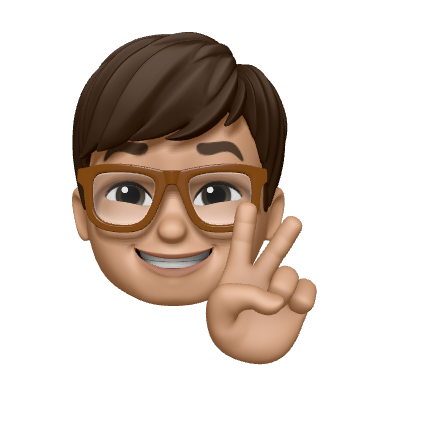

Hello, friend!
I am Bugra. Its great connecting with you!
I am a second-year Technical Computer Science student based out of Enschede.
Im currently studying at University of Twente and many projects that I have done for the university can be found on my Github and upon request. I am skilled in setting the requirements, specifying the business needs and implementing the software in exquisiteness way.
I am highly self-motiated and eager on learning new things. I spend most of my free time with trying new projects and new tools to keep myself up to date with the technology. While I am not coding, I enjoy travelling and seeing new places.
I am always looking on the lookout for challenging opportunities and currently open for hiring as intern.